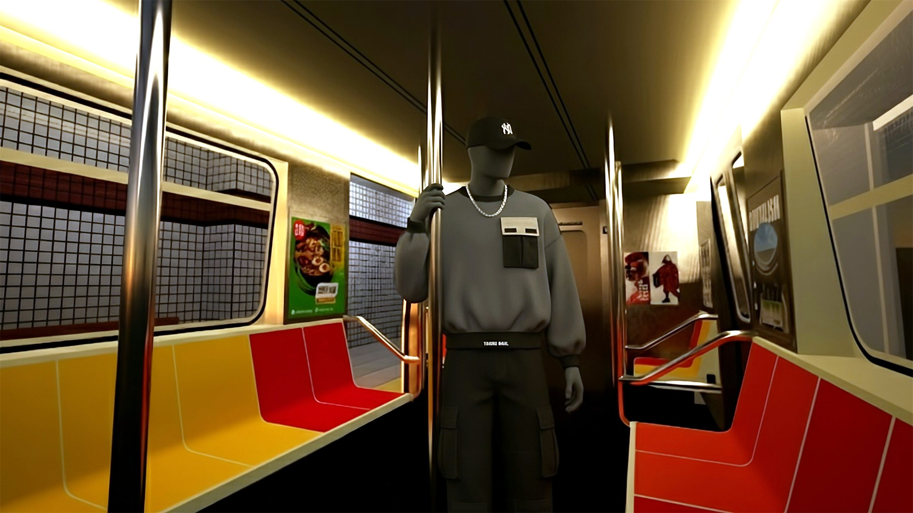
Third Rail
Third Rail is a streetwear line inspired by the New York City subway, paired with an exhibition space designed to show it. The collection draws on the system’s graffiti, signage and station tile, and the room turns into a subway platform: a full-size train car sits on the tracks, and visitors walk along the platform past mannequins dressed in the line.
The project moved from concept sketches and a mood board to garment flats and 3D models, then to a measured floor plan, sections and elevations in Revit, and finally to rendered views of the finished space.
Concept
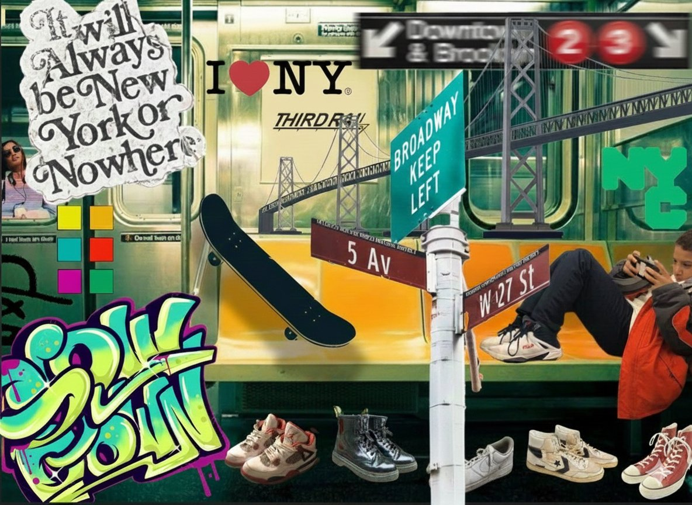
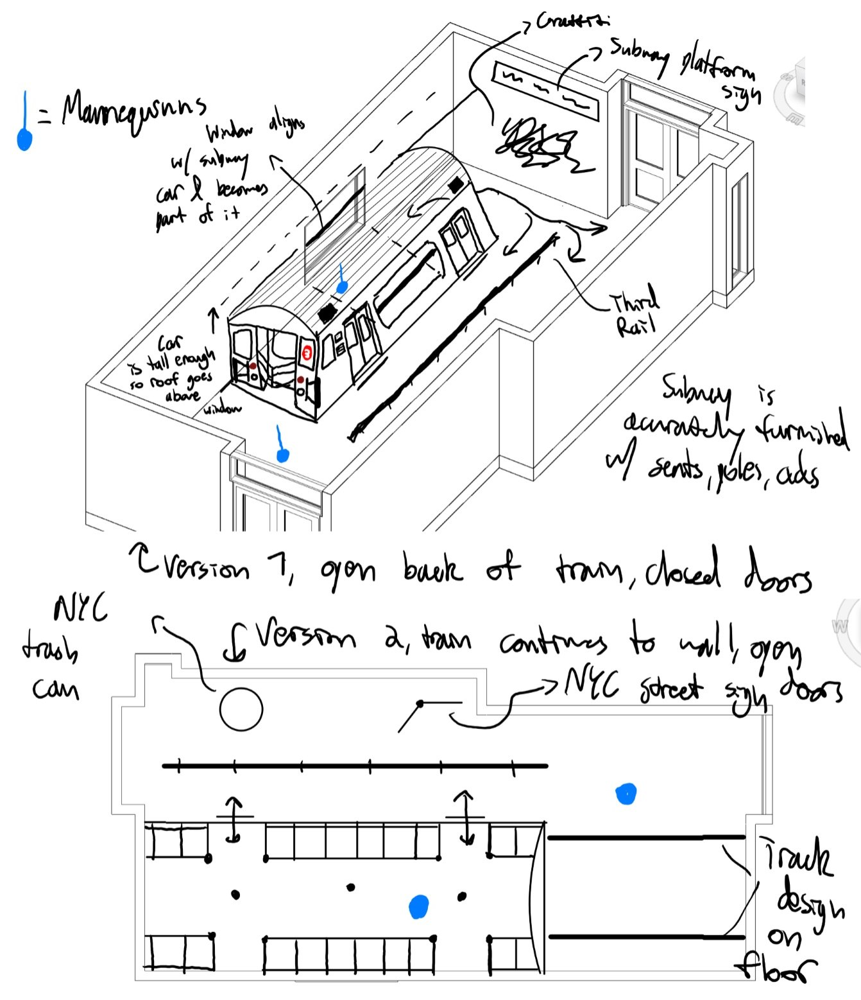
The Clothing Line
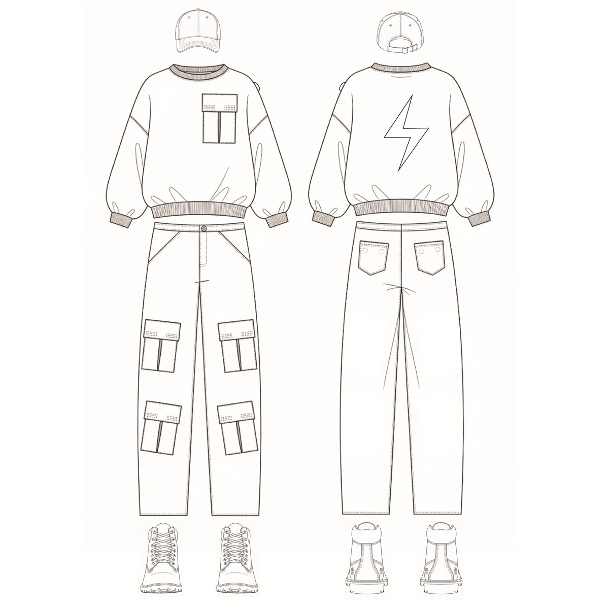
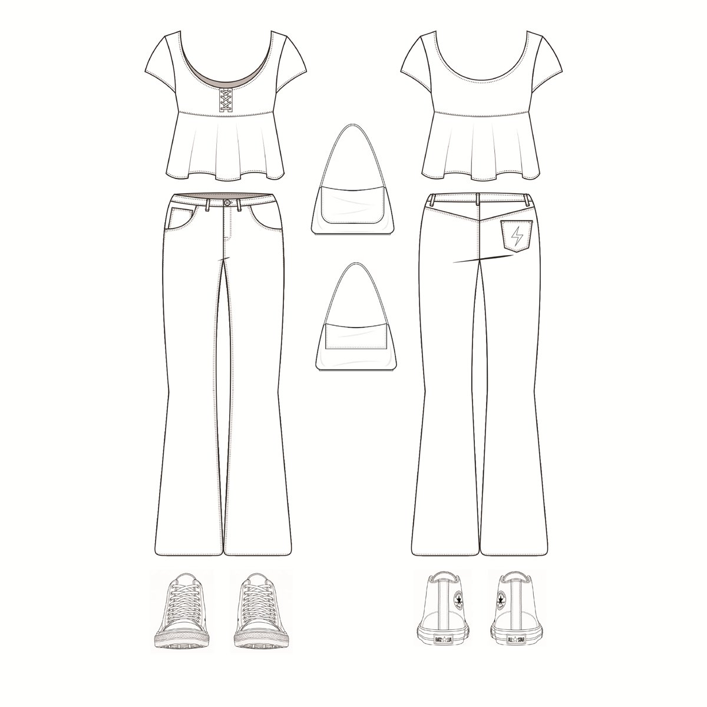
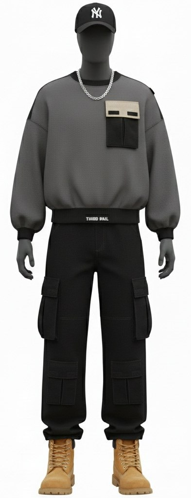
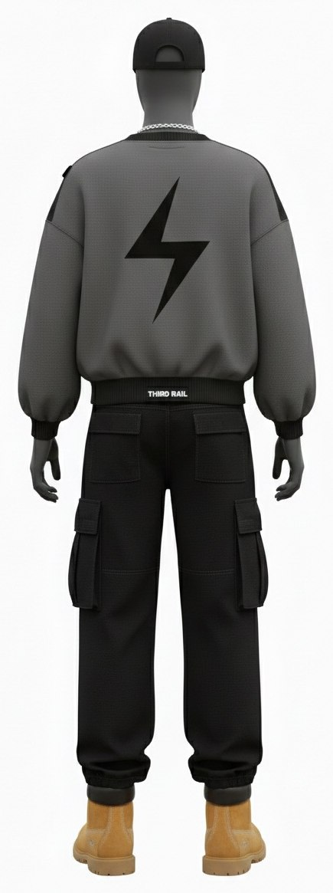
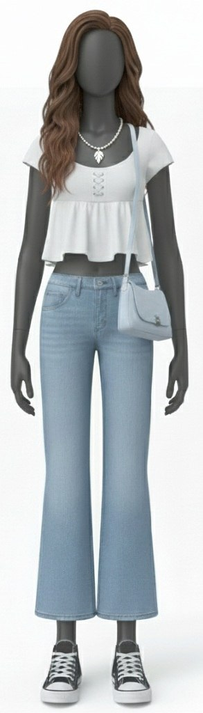
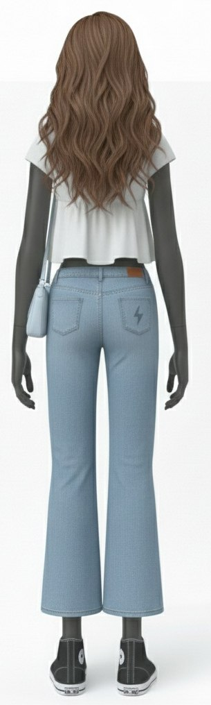
Exhibition Space
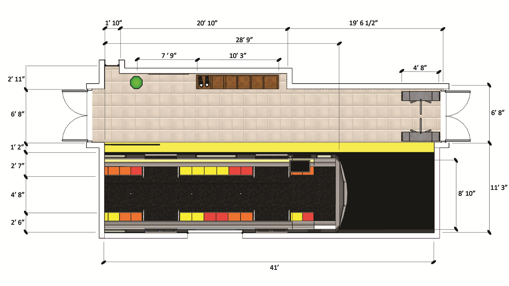
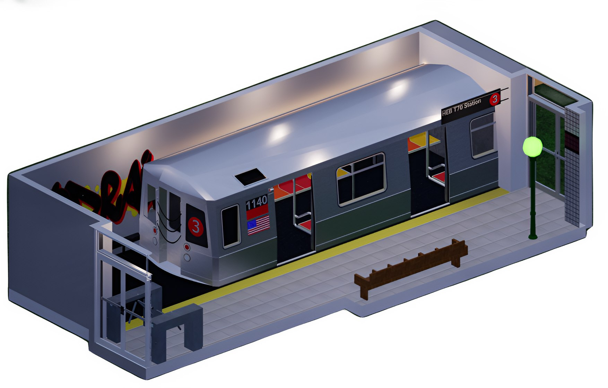
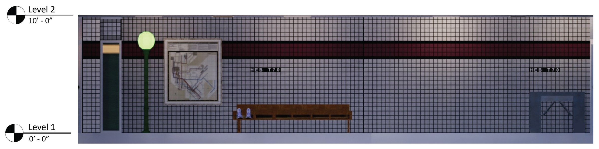
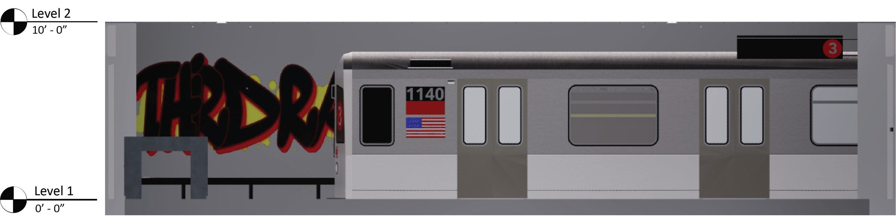
Renders

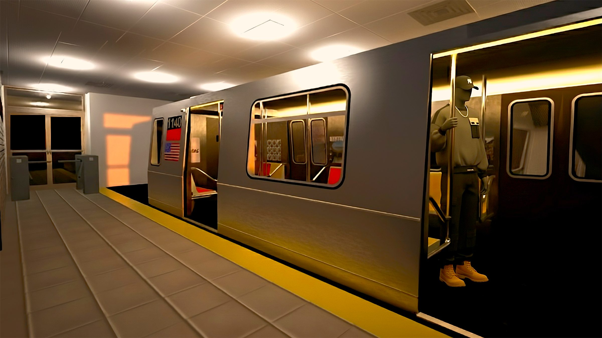
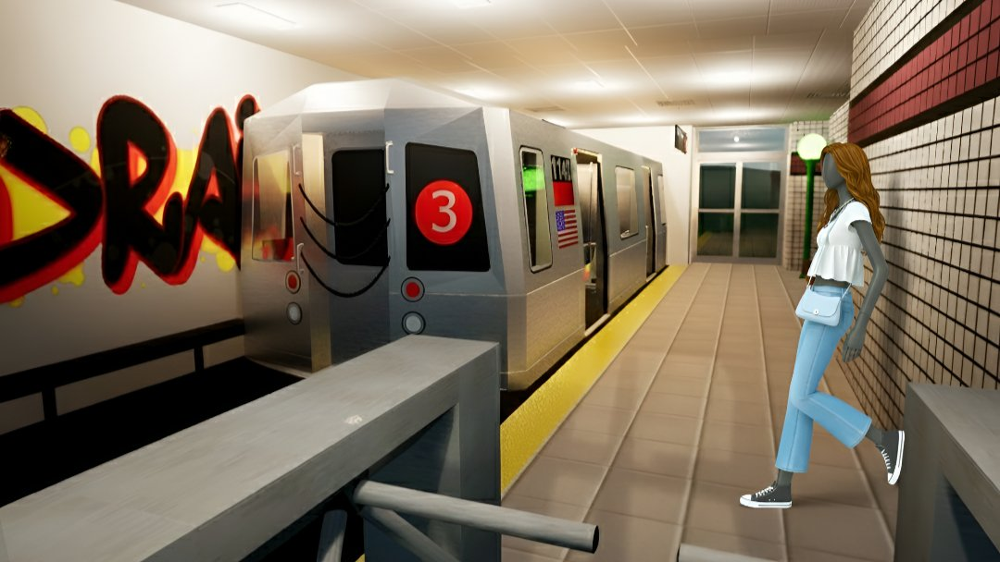